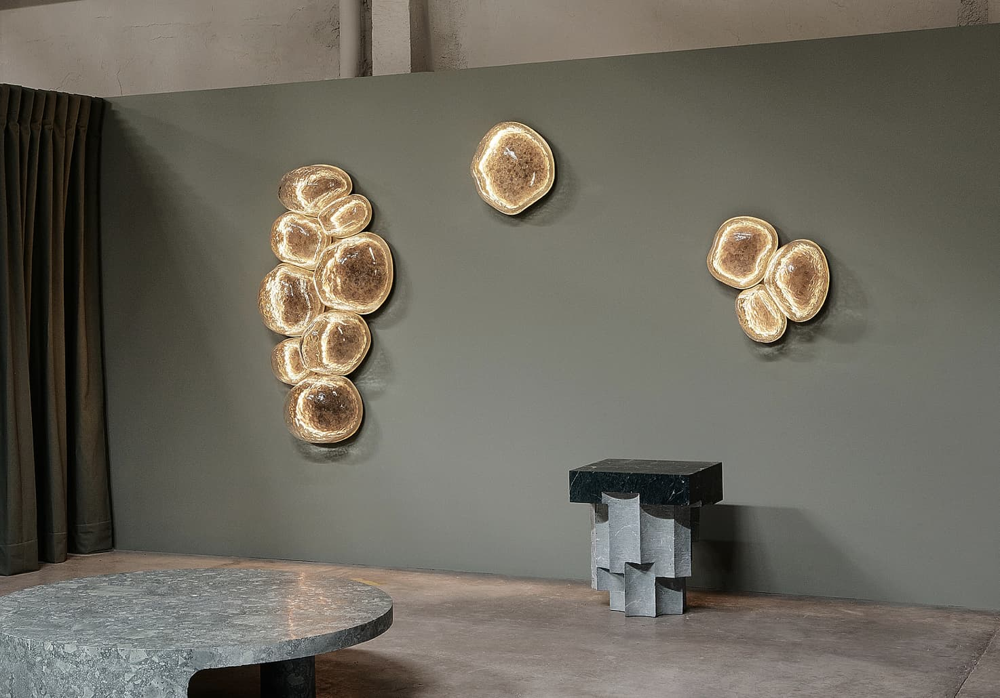
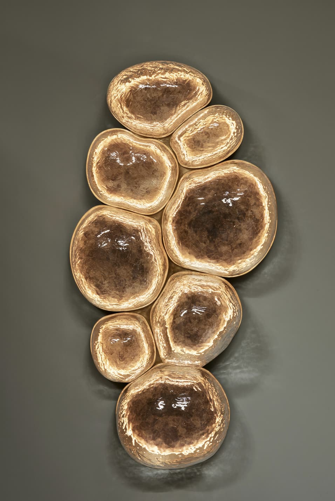
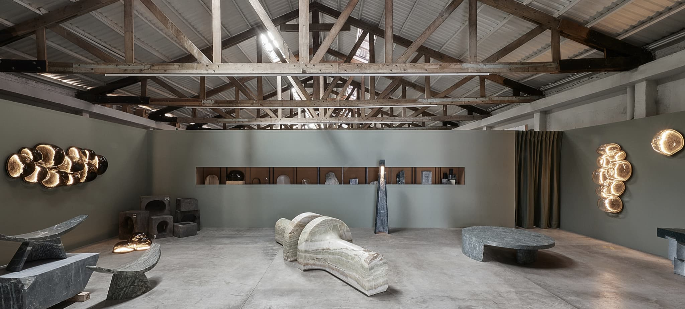

EWE

Fundado por Age Salajõe, Erich Ginder y Héctor Esrawe, EWE Studio se posiciona en la intersección entre diseño, arte y ritual. Su práctica se enfoca en la creación de objetos y mobiliario que reinterpretan símbolos culturales desde una perspectiva contemporánea. Sus piezas, de carácter escultórico, buscan provocar una conexión emocional y reflexiva, donde el objeto trasciende su función para convertirse en un elemento simbólico.
Diseños

Lamparas "Magma Café" chicas, Ciudad de México, 2017

Lampara "Magma Café", Ciudad de México, 2017

EWE Studio/Exhuma Exhibition, Ciudad de México, 2023